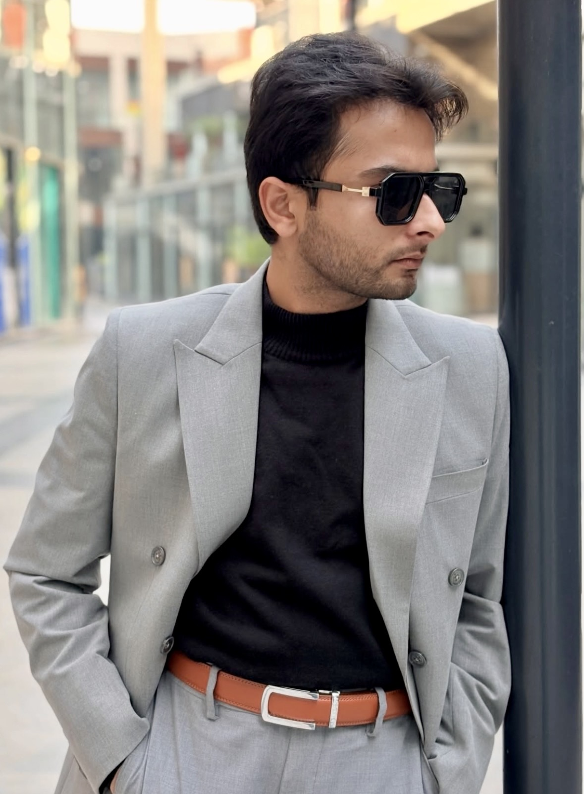

Anirudh Kapoor is a Politecnico di Milano–trained product designer whose practice has, over more than a decade, refused to stay in one discipline. Interiors and construction, exhibition and signage, furniture and artwork, branding and creative direction, automotive journalism, linguistics, and — most recently — applied AI systems.
The throughline is a way of working, not a category. He reads what a space, product, or brand is for — the logic of its use and audience — and resolves it with a designer's eye for proportion, material, and restraint. The disciplines vary; the method does not.
Objective logic and subjective taste, treated as a single faculty.
Research, constraint, system, and proof. Understanding the problem before touching the form.
Proportion, material, restraint, and wit — held to the same rigour as the logic.
The same method applied from a building to an object to a sentence to a line of code.
Interiors, construction, furniture, products, exhibitions, and signage — concept through built outcome.
Branding, creative & art direction, artwork consultancy, copywriting, and the systems that hold them together.
Automotive journalism, product reviews, design research, photography, and the Anomalogy podcast.
AI consulting, agentic workflows & automation, trading systems, and creative web — design intelligence, literally.
Operating as Anirudh Kapoor Designs · Anirudh Kapoor Real Estate Solutions · Anomalogy · Things Reviewed India
“Across eighteen fields, the same hand is visible — a preference for constraint over decoration, and a refusal to treat any discipline as beneath rigour.”